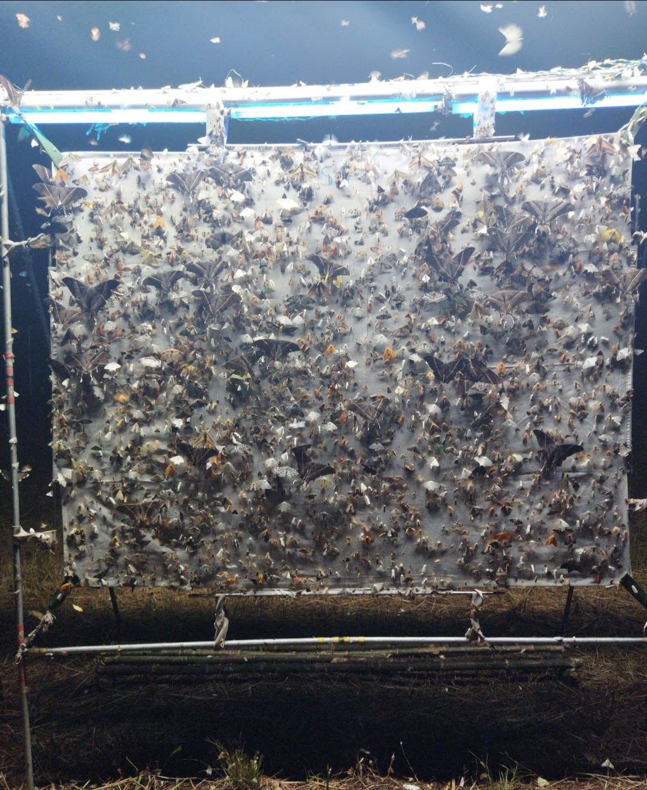

Hello, I’m Mansi.
My work explores how insects respond to environmental change across space, time, and elevation. I use a combination of field ecology, morphology, imaging, radar remote sensing, and computational tools to study biodiversity and movement in changing landscapes.